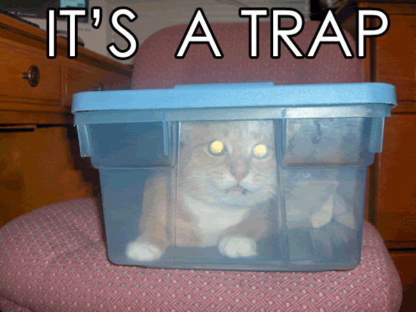
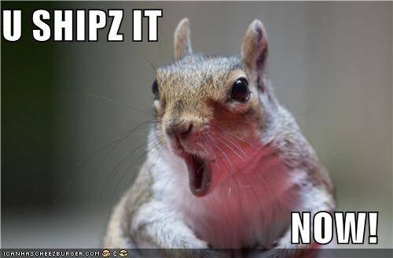
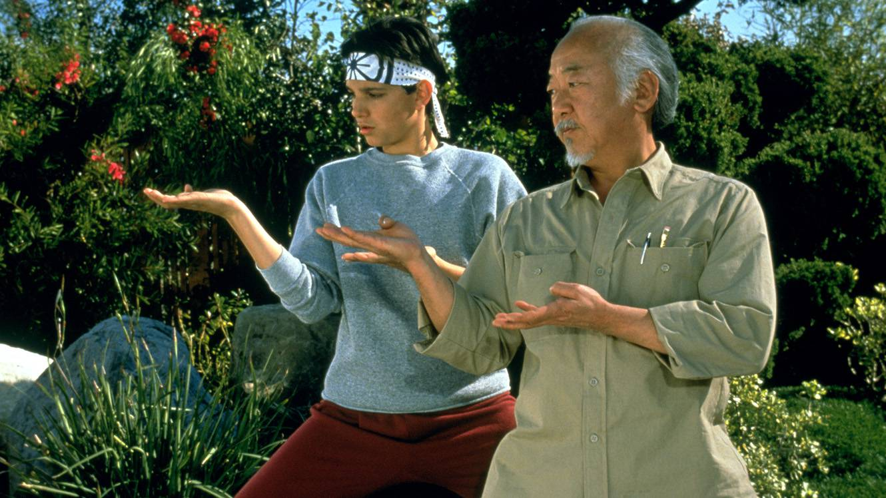

Your browser doesn't support the features required by impress.js, so you are presented with a simplified version of this presentation.
For the best experience please use the latest Chrome, Safari or Firefox browser.
Conquering
Impostor
Syndrome
Thriving in the Open Source Community
About Us
-
Heather Rodriguez
Engineer at Civic Actions
- Kat Kuhl
Director of Technology at CHIEF
- Sarah Thrasher
Senior Front-end Dev at Acquia
Who does it affect?
- women
- minorities
- LGBT
- people of lower socioeconomic background
- ...anyone
So, why is impostor syndrome a problem?

Give yourself permission to make mistakes.
- If you have this feeling of not belonging, in your job or in your community, it can be hard to put yourself out there and take risks.
- Asking a question you should know the answer to will out you to everybody!
- Be conscious of this tendency. When someone says a term or acronym you don't know, ask them, instead of just googling it later. You might not be the only person who didn't know.
- Accept that you don't have to be the expert on every topic. Nobody is!
- One of the best things that you can do for yourself is to become comfortable saying "I don't know". It actually makes you look more confident doing this, especially next to people who try to make things up rather than admit they don't know something.

- Putting code up for review, or out into the wild on github, bitbucket, or D.O. is annother thing that can cause you stress if you feel like an impostor.
- Being on a team that does code reviews well has alieviated a lot of that for me. Collaborative code reviews give you insight into how other people do things, and how a piece of code evolves as we hammer away at a problem.
- Alicia Liu, an engineer who has blogged and spoken about impostor syndrome says "Programming is basically failing over and over again until it works, and that makes it hard to build confidence."
- The best thing you can do here is to realize this. It's not just you and you can battle through it. It will get easier the more you do it.
- Just ship it! What I mean by this isn't put out broken or half working code, but don't stress over perfecting everything. Focus on minimum viable product, and get something out that you and others can iterate on.
If you aren't making mistakes, it means you aren't out there doing anything.
Neil Gaiman
- "What's the worst that could happen" is a cheeky slogan that one of our colleagues put as a tag line on one of our development tools.
- Take down a production server? Accidentally publish something that wasn't supposed to go live yet? Delete important file?
- One bug, one misstep, one failed project, one bad job choice is not going to ruin the rest of your career.
- What matters is how you respond when things go awry.
- Take responsibility, escalate early, dig in and fix things.
- These can be hard lessons, but they will become war stories.
- When you feel yourself down talking, or starting to panic, it can help to mentally go "Stop. This is the impostor syndrome talking." Try to retrain your mind this way.
- Visualize yourself as the confident techy you see in other people.
- It really helps to have someone to talk to about this, or at least start a journal. Get your feelings out and think about what brought them on.
Get active in the community.
Pro Tips
- Find people you can reach out to when you need help.
- Demystify the experts by actually talking to them!
- Ask questions. Often.
- Find out how you can contribute!
What do mentors do?
- Offer their time.
- Review code/development with individuals one-on-one.
- Listen to presentations and give feedback.
- Give career advice and consultation.

Own your career.
If you want to move up at your current job...
Keep a record of your accomplishments
(& take credit for them).
Don’t say:
- "I just Googled it."
- "It's no big deal."
- "She did most of the work."
Communicate with your boss about the skills
you want to grow.
Learn the responsibilities (& job description)
of the role you want.
Build a case for advancement based
on your work.
But don't believe that you have
to overwork yourself.
If you want a new job...
"Here’s where I think women get it wrong: we are perpetually rounding down, where, by all rules of mathematics, we should be rounding up. And that slight miscalculation has huge repercussions in our professional lives."
Confidence is a Numbers Game, Jodi Glickman
Hewlett Packard report:
- Women wouldn't apply for a job unless they felt they meet 100% of the qualifications.
- Men applied if they felt they meet as little as 60% of them.
You do not have an obligation to explain
what you don't know in an interview.
(Other people aren't.)
Know why you're a great hire.
Then tell that story at your interview.